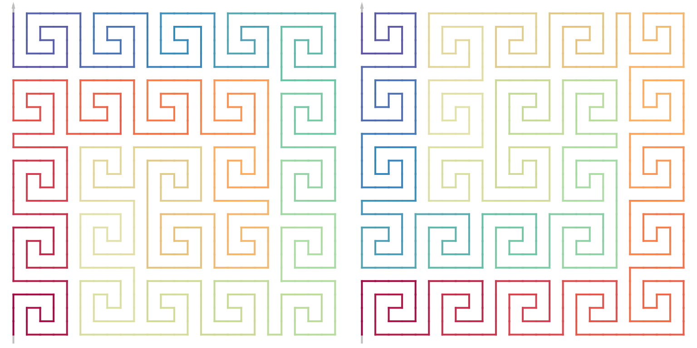

General nxn Curves
Zuguang Gu (z.gu@dkfz.de)
2024-09-05
Source:vignettes/nxn_curve.Rmd
nxn_curve.RmdA curve with mode nxn can be generated by rules created for a specific type of nxn level-1 unit. Consider the following 4x4 level-1 unit which we call “the 4x4 Peano unit”:
4x4 Peano curve
We will create rules for the expansion from level-0 to level-1 for the 4x4 Peano unit. We only cover the three major base patterns of I/R/L. When creating the expansion rules, notice the following two requirements:
- The in-direction and out-direction of the level-1 unit should be the same as these of the level-0 base patterns.
- If the two level-1 units have the corner values of “12/21”, “12” should always be the first one.
For each base pattern, there are two types of level-1 units. \(I_1\) is:
UNIVERSE_4x4_PEANO = c("I", "R", "L")
RULES_4x4_PEANO = list()
RULES_4x4_PEANO[["I"]][[1]] = sfc_unit("RIILLIIRRIILLIIR", rot = 0, universe = UNIVERSE_4x4_PEANO)\(I_2\) is basically a horizontal flip of \(I_1\):
RULES_4x4_PEANO[["I"]][[2]] = sfc_hflip(RULES_4x4_PEANO[["I"]][[1]])To define \(R_1\), we first rotate \(I_2\) by -90 degrees, then change the first base pattern to \(I^{0}\).
u = sfc_rotate(RULES_4x4_PEANO[["I"]][[2]], -90)
u[1] = sfc_sequence("I", rot = 0)
RULES_4x4_PEANO[["R"]][[1]] = u\(R_2\) is based on \(I_2\) by change the last base pattern to \(I^{-90}\)
u = RULES_4x4_PEANO[["I"]][[2]]
u[length(u)] = sfc_sequence("I", rot = -90)
RULES_4x4_PEANO[["R"]][[2]] = u\(L_1\) is a horizontal flip of \(R_2\) and \(L_2\) is a horizontal flip of \(R_1\).
RULES_4x4_PEANO[["L"]][[1]] = sfc_hflip(RULES_4x4_PEANO[["R"]][[2]])
RULES_4x4_PEANO[["L"]][[2]] = sfc_hflip(RULES_4x4_PEANO[["R"]][[1]])Let’s validate whether these level-1 units are in the correct forms and orientations:
draw_multiple_curves(
RULES_4x4_PEANO[["I"]][[1]],
RULES_4x4_PEANO[["I"]][[2]],
RULES_4x4_PEANO[["R"]][[1]],
RULES_4x4_PEANO[["R"]][[2]],
RULES_4x4_PEANO[["L"]][[1]],
RULES_4x4_PEANO[["L"]][[2]],
nrow = 2, extend = TRUE
)Next we generate the sfc_rules object with the sfc_rules() function.
SFC_RULES_4x4_PEANO = sfc_rules(rules = RULES_4x4_PEANO,
name = "Peano 4x4",
bases = BASE_LIST[UNIVERSE_4x4_PEANO])
SFC_RULES_4x4_PEANO## Name: Peano 4x4
## I | I_1 = R(0)I(270)I(270)L(270)L(0)I(90)I(90)R(90)R(0)I(270)I(270)L(270)L(0)I(90)I(90)R(90) corner = (1, 2)
## I_2 = L(0)I(90)I(90)R(90)R(0)I(270)I(270)L(270)L(0)I(90)I(90)R(90)R(0)I(270)I(270)L(270) corner = (2, 1)
## R | R_1 = I(0)I(0)I(0)R(0)R(270)I(180)I(180)L(180)L(270)I(0)I(0)R(0)R(270)I(180)I(180)L(180) corner = (1, 2)
## R_2 = L(0)I(90)I(90)R(90)R(0)I(270)I(270)L(270)L(0)I(90)I(90)R(90)R(0)I(270)I(270)I(270) corner = (2, 1)
## L | L_1 = R(0)I(270)I(270)L(270)L(0)I(90)I(90)R(90)R(0)I(270)I(270)L(270)L(0)I(90)I(90)I(90) corner = (1, 2)
## L_2 = I(0)I(0)I(0)L(0)L(90)I(180)I(180)R(180)R(90)I(0)I(0)L(0)L(90)I(180)I(180)R(180) corner = (2, 1)With the rules SFC_RULES_4x4_PEANO, we use the generator function sfc_generator() to generate two functions:
-
sfc_4x4_peano(): main function for generating curves. -
draw_rules_4x4_peano(): draw the expansions from level-0 to level-1.
Here "4x4_peano" is the suffix of the two function names.
sfc_generator(SFC_RULES_4x4_PEANO, "4x4_peano")## The following two functions are exported to the current top environment:
## - sfc_4x4_peano()
## - draw_rules_4x4_peano()
draw_rules_4x4_peano()
draw_multiple_curves(
sfc_4x4_peano("I", "111"),
sfc_4x4_peano("I", "121"),
lwd = 2, nrow = 1
)5x5 Meander curve
Similarly, we can generate the expansion rules for the 5x5 Meander curve with the following unit:
UNIVERSE_5x5_MEANDER = c("I", "R", "L")
RULES_5x5_MEANDER = list()
RULES_5x5_MEANDER[["I"]][[1]] = sfc_unit("IIIRIIRIRRLLILIILIIILIIIR", rot = 0, universe = UNIVERSE_5x5_MEANDER)
RULES_5x5_MEANDER[["I"]][[2]] = sfc_hflip(RULES_5x5_MEANDER[["I"]][[1]])
u = sfc_rotate(RULES_5x5_MEANDER[["I"]][[2]], -90)
u[1] = sfc_sequence("R", rot = 0)
RULES_5x5_MEANDER[["R"]][[1]] = u
u = RULES_5x5_MEANDER[["I"]][[2]]
u[length(u)] = sfc_sequence("I", rot = -90)
RULES_5x5_MEANDER[["R"]][[2]] = u
RULES_5x5_MEANDER[["L"]][[1]] = sfc_hflip(RULES_5x5_MEANDER[["R"]][[2]])
RULES_5x5_MEANDER[["L"]][[2]] = sfc_hflip(RULES_5x5_MEANDER[["R"]][[1]])
SFC_RULES_5x5_MEANDER = sfc_rules(rules = RULES_5x5_MEANDER,
name = "Meander 5x5",
bases = BASE_LIST[UNIVERSE_5x5_MEANDER])And the curve generator:
sfc_generator(SFC_RULES_5x5_MEANDER, "5x5_meander")## The following two functions are exported to the current top environment:
## - sfc_5x5_meander()
## - draw_rules_5x5_meander()The expansion rules:
draw_rules_5x5_meander()
draw_multiple_curves(
sfc_5x5_meander("I", 11),
sfc_5x5_meander("I", 21),
lwd = 2, nrow = 1
)This 5x5 base unit is not symmetric, thus it has a flipped version. To generate a curve generator function that also supports flipping, we can set the argument flippable = TRUE.
sfc_generator(SFC_RULES_5x5_MEANDER, "5x5_meander2", flippable = TRUE)## The following two functions are exported to the current top environment:
## - sfc_5x5_meander2()
## - draw_rules_5x5_meander2()
## flipping is supported.Then the same as sfc_3x3_meander(), we can use the flip argument in sfc_5x5_meander2().
draw_rules_5x5_meander2(flip = TRUE)
draw_multiple_curves(
sfc_5x5_meander2("I", 11),
sfc_5x5_meander2("I", 11, flip = TRUE),
lwd = 2, nrow = 1
)
Unit with 11/22 corners
We next demonstrate a 5x5 curve based on the 11/22 unit.
Similar as SFC_RULES_PEANO, we include base pattern J. In this example, \(J\) is basically a letter switch from \(I\) (i.e. I <-> J, R <-> L). \(R\) is based on \(I\) with the last letter changed to R and \(L\) is based on \(J\) with the last letter changed to L.
UNIVERSE_5x5_FOO = c("I", "J", "R", "L")
RULES_5x5_FOO = list()
RULES_5x5_FOO[["I"]][[1]] = sfc_unit("IJRRILJILLJRILJRRIJRILLJI", rot = 0, universe = UNIVERSE_5x5_FOO)
RULES_5x5_FOO[["J"]][[1]] = sfc_unit("JILLJRIJRRILJRILLJILJRRIJ", rot = 0, universe = UNIVERSE_5x5_FOO)
RULES_5x5_FOO[["R"]][[1]] = sfc_unit("IJRRILJILLJRILJRRIJRILLJR", rot = 0, universe = UNIVERSE_5x5_FOO)
RULES_5x5_FOO[["L"]][[1]] = sfc_unit("JILLJRIJRRILJRILLJILJRRIL", rot = 0, universe = UNIVERSE_5x5_FOO)
SFC_RULES_5x5_FOO = sfc_rules(rules = RULES_5x5_FOO,
name = "Foo 5x5",
bases = BASE_LIST[UNIVERSE_5x5_FOO])Sometimes it may need several edits of the sequences in base units to make I/J/R/L in their correct forms. Directly plotting them helps to validate the units:
draw_multiple_curves(
RULES_5x5_FOO[["I"]][[1]],
RULES_5x5_FOO[["J"]][[1]],
RULES_5x5_FOO[["R"]][[1]],
RULES_5x5_FOO[["L"]][[1]],
nrow = 2, extend = TRUE
)We may also validate whether a traverse path exist, e.g. for \(I\):
plot_traverse_paths(SFC_RULES_5x5_FOO, RULES_5x5_FOO[["I"]][[1]])If everything works fine, we can generate the curve functions. Please note, you can set flippable = TRUE to also include the flipped rules.
sfc_generator(SFC_RULES_5x5_FOO, "5x5_foo")## The following two functions are exported to the current top environment:
## - sfc_5x5_foo()
## - draw_rules_5x5_foo()
draw_rules_5x5_foo()
p = sfc_5x5_foo("I", 11)
plot(p)We can manually flip the level-1 units to make every two neighbour units symmetric (you can also use sfc_apply()):
sfc_flip_unit(p, c("4", "7", "8", "9", "11", "12", "15", "16", "18", "19", "20", "23")) |> plot()Please note for the curves based on 11/22 units, for the following structure (or its rotated form)
the minimal length of the two vertical segment should be an even number, or the segment should allow even numbers of units to be put in.